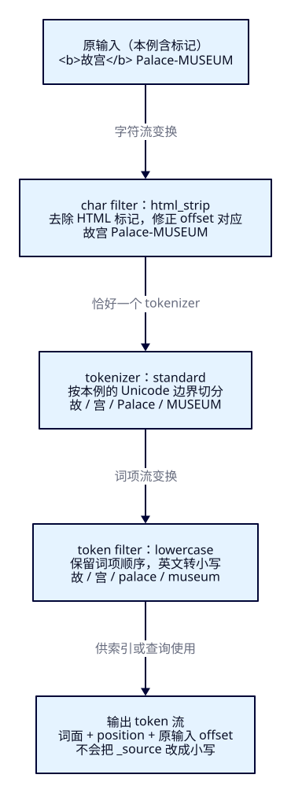
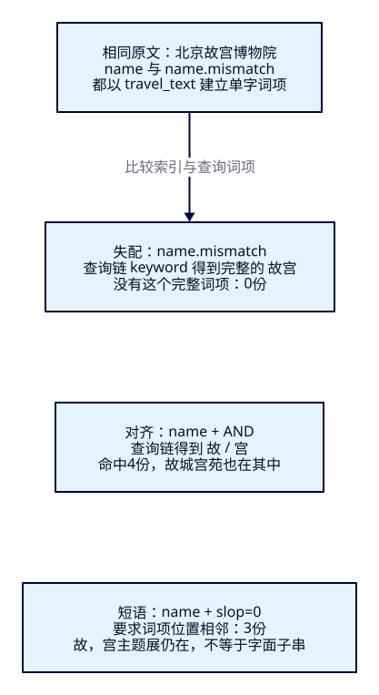

明明有“北京故宫博物院”，
为什么搜不到？
基础搜索已经能筛选、排序、分页和更新。现在游客输入“故宫”，运营明明看见了名称，却得到空结果。本课把文本拆成可观察的token，找到一次故意配置失配的原因，再检查恢复召回后混进来的“故城宫苑”。先解释发生了什么，才有依据比较下一课的中文分词方案。
学完能证明什么
- 用实际token、position、offset定位字符过滤、分词或小写归一发生在哪一环。
- 找出索引/查询链的故意失配，使用REST与Java恢复相同的候选，并说明局部覆盖的范围。
- 逐份解释漏召回、AND/短语误召回与业务过滤，用固定数据核对，清理后再完整重做。
1. 先把“搜不到”变成可以解释的问题
Elasticsearch在这里负责从旅游搜索文档中找候选。召回就是找到候选集合；漏召回是应找的没有进入，误召回是人按需求判断不相关的也进来了。ES不会仅凭名称理解旅游实体；需要分析规则、查询与业务条件共同表达意图。
游客选择北京，预算不超过 100 元，输入“故宫”。运营确认资料里有“北京故宫博物院”，搜索却返回空集。
名称里看得见这两个字，为什么没有命中？
全文查询需要关注两次文本处理：写入时，名称怎样形成可检索的词项；搜索时，“故宫”怎样形成查询词项。两边产生的词项能否对应，会影响结果。原文中出现了某段文字，并不能单独证明当前字段、当前请求一定命中。
本课故意准备一个失配字段：写入时把“故宫”分析为“故”和“宫”，查询时却把它作为完整的“故宫”词项。我们只修复这个明确的漏召回原因。
这也不是“standard 默认搜中文会失败”的证明。后面的对齐字段恰恰用于说明：在本课语料和配置下，它能够召回包含相关字项的文档；真正需要继续追问的是，召回的是否都是游客想找的景点。
2. 先处理字符，再切分，再处理词项

把“故宫 Palace-MUSEUM（东门）”交给本课的 travel_text，可以沿着三个环节观察：
输入文本 → 字符过滤 → 分词 → 词项过滤 → token。
字符过滤器先处理字符流，例如 html_strip 去掉 HTML 标签。随后，tokenizer 按规则切分文本。最后，token filter 处理已经切出的 token，例如 lowercase 将英文归一为小写。
一个 analyzer 恰好包含一个 tokenizer，可以有零到多个字符过滤器和零到多个词项过滤器。执行顺序影响结果，三者的职责也不能互换。官方自定义分析器说明
本课显式定义：
| 名称 | 配置与用途 |
|---|---|
travel_text |
custom；html_strip → standard tokenizer → lowercase |
case_sensitive |
自定义 analyzer；使用 standard tokenizer，无 token filter；仅供对照查询覆盖 |
这里的 lowercase 是 filter 的工作。只指定 standard tokenizer，不会因此自动得到小写归一。
也不要把 standard 描述成理解“故宫”这一旅游实体的中文语义分词器。本课实际观察到的中文单字 token，只能说明当前切分规则怎样处理这些字符，不能证明它理解了景点名称。
索引与搜索也不要求永远采用完全相同的 analyzer；需要判断的是两边的设计能否支持目标查询。本课先用相同链建立容易解释的基线，再单独观察故意失配。官方 search_analyzer 说明
3. 同一资料，保留三种字段表达
实验锚定 ES 9.4.0 / Lucene 10.4.0，使用独立索引 tut-f13-attractions：一主分片、零副本、refresh_interval=-1、dynamic: strict。八份文档的币种均为 CNY，金额单位为整数分。
| 业务 ID | name | 城市 | 状态 | 价格／分 |
|---|---|---|---|---|
| bj-palace | 北京故宫博物院 | BJ | open | 6000 |
| bj-mixed | 北京故宫博物院 Palace-MUSEUM（东门） | BJ | open | 6000 |
| bj-separated | 故城宫苑 | BJ | open | 3000 |
| bj-punctuation | 故，宫主题展 | BJ | open | 1000 |
| sy-palace | 沈阳故宫博物院 | SY | open | 5000 |
| bj-closed | 北京故宫夜游 | BJ | closed | 7000 |
| bj-other | 北京国家博物馆 | BJ | open | 0 |
| bj-dash | Palace Museum | BJ | open | 4000 |
同一个 name 输入建立三种字段表达：
name：text，索引与搜索均显式使用travel_text。name.mismatch：text多字段，索引用travel_text，search_analyzer故意设为keyword。name.raw：keyword，保留名称整值的精确表达。
name.mismatch 仍是文本字段；它的搜索 analyzer 叫 keyword，不意味着字段类型变成了 keyword。
以下主查询始终限定 BJ、CNY、open、价格 0–10000 分，包含两端，按可排序的 keyword 业务 ID 升序返回。这个顺序用于稳定核对，本课不解释评分高低。
4. f13-c01：准备固定资料，再观察分析链
应用沿用Boot4.0.8、官方Java与Rest5 Client9.4.8、Wrapper3.3.4/Maven3.9.11。应用需JDK25，作者使用Temurin25.0.4.1+1；与ES bundled JVM分开。脚本使用Bash、curl与Python3.10+标准库，正文按语义手工核对即可。Pages只承载教程。
cd projects/travel-search
docker compose -f infra/single-node/compose.yaml up -d es
bash infra/single-node/wait.sh
bash labs/f13/01-prepare.sh
bash labs/f13/02-chain.sh准备六请求依次核对ES/Lucene版本、创建确认、目标索引green且未超时、Bulk八项created且errors=false、显式refresh零失败、count=8。若索引已存在，先停下，按本课点名清理后重做。关闭自动refresh用于保证实验前提；不阻止手动refresh。
{
"settings": {
"number_of_shards": 1,
"number_of_replicas": 0,
"refresh_interval": "-1",
"analysis": {
"analyzer": {
"travel_text": {
"type": "custom",
"char_filter": [
"html_strip"
],
"tokenizer": "standard",
"filter": [
"lowercase"
]
},
"case_sensitive": {
"type": "custom",
"tokenizer": "standard",
"filter": []
}
}
}
},
"mappings": {
"dynamic": "strict",
"properties": {
"attraction_id": {
"type": "keyword"
},
"name": {
"type": "text",
"analyzer": "travel_text",
"search_analyzer": "travel_text",
"fields": {
"mismatch": {
"type": "text",
"analyzer": "travel_text",
"search_analyzer": "keyword"
},
"raw": {
"type": "keyword"
}
}
},
"city_code": {
"type": "keyword"
},
"status": {
"type": "keyword"
},
"currency": {
"type": "keyword"
},
"ticket_price_fen": {
"type": "integer",
"coerce": false
}
}
}
}travel_text是本索引内自定义名字，调用它需带索引路径；直接POST /_analyze找不到这个索引级名字会400。配置中的char_filter先处理字符流，filter随后处理token流。case_sensitive只用于查询反例；没有给生产搜索选择“最佳分词器”。GET mapping可能省略与analyzer相同的search_analyzer，按其有效回退语义判断，不能把省略当成丢失。
5. token说什么，position和offset各说什么
{
"field": "name",
"text": "故宫 Palace-MUSEUM（东门）"
}向本课索引的 _analyze 提交 field: name，文本使用：
故宫 Palace-MUSEUM（东门）
ES9.4.0实测（01-field.json）：
| token | position | offset 半开区间 |
|---|---|---|
| 故 | 0 | [0, 1) |
| 宫 | 1 | [1, 2) |
| palace | 2 | [3, 9) |
| museum | 3 | [10, 16) |
| 东 | 4 | [17, 18) |
| 门 | 5 | [18, 19) |
token 是分析得到的词项文本。position 表示词项位置，可用于解释短语关系。offset 则指向原始输入中的文本范围，可用于定位原文；它不是第几个词，也不是字节偏移。
本课 offset 按 UTF-16 单位理解，区间包含起点、不包含终点。再分析“故宫😀 Palace”：😀占两个 UTF-16 单位，因此 Palace 对应范围为 [5,11)，不能按照肉眼数出的字符个数直接推算。本轮还保留了😀这个token：position=2、offset=[2,4)；palace的position=3。不能把“标点常不成词”扩大为“所有符号都会被丢弃”。
接着保持第一份文本不变，做三次临时对照：
- 只指定
standardtokenizer：英文仍为Palace、MUSEUM。 - 加入
lowercasefilter：英文变成palace、museum。 - 换成
whitespacetokenizer：实际按空白切成“故宫”和“Palace-MUSEUM（东门）”，连字符、括号不会按前一种规则拆开。
第三次改变的是切词规则，不能解释成“只是关闭了小写转换”。
再显式指定 analyzer: travel_text、explain: true，分析：
<b>故宫</b> Palace-MUSEUM（东门）
观察字符过滤后的文本、tokenizer 的输出，以及 lowercase 后的输出。offset仍对照原始字符串，而不是在去标签后的短串上重新编号。本轮“宫”的offset实际为[4,9)，结束位置包含被过滤的闭合标签；区间长度无需等于词面长度，不能用这段原串的字面切片反推token。分析过程不会把 _source 中的原文改成小写或去标签后的文本。
{
"analyzer": "travel_text",
"text": "<b>故宫</b> Palace-MUSEUM（东门）",
"explain": true
}手工复现与两个只改变一环的请求
curl --fail-with-body -sS -X POST http://127.0.0.1:19200/tut-f13-attractions/_analyze -H 'Content-Type: application/json' --data-binary @search/f13/analyze/01-field.json
curl --fail-with-body -sS -X POST http://127.0.0.1:19200/tut-f13-attractions/_analyze -H 'Content-Type: application/json' --data-binary @search/f13/analyze/05-explain.json{
"tokenizer": "standard",
"text": "故宫 Palace-MUSEUM（东门）"
}{
"tokenizer": "standard",
"filter": [
"lowercase"
],
"text": "故宫 Palace-MUSEUM（东门）"
}另有whitespace、标点位置、UTF-16、空流。四个请求也在完整脚本中执行。
6. field分析正常，为什么搜索仍然为空？
对 field: name.mismatch 调用 _analyze，仍能看到“故”“宫”。这里推导的是字段的索引 analyzer，不会自动模拟它的 search_analyzer。
要观察故意失配的查询链，应显式使用 analyzer: keyword，对同一个输入“故宫”分析。实际只有一个完整 token：“故宫”。
于是问题具体了：文档写入时形成的是“故”和“宫”，查询寻找的却是完整词项“故宫”。把 operator 改成 AND 也无法补救，因为查询分析后只有一个词项，AND 不会替你重新切词。
_analyze 的职责是分析提交的文本并返回 token。官方 Analyze API 说明 它没有直接读取这些文档已经存下的词项，也不能证明真实搜索一定命中。判断必须同时对照 mapping/settings、固定数据、refresh 前提和实际 search。
{
"field": "name.mismatch",
"text": "故宫"
}{
"analyzer": "keyword",
"text": "故宫"
}7. f13-c02：恢复候选之后，再找误召回

bash labs/f13/03-recall.sh先预测每个名字会不会进入结果，再观察响应。下面是对齐后的完整主查询；失配版仅把match字段改为name.mismatch，短语版使用match_phrase/slop=0，英文反例在match内增加analyzer。完整对照文件均保留，不能在比较时悄悄改变硬条件。
{
"size": 20,
"track_total_hits": true,
"track_scores": true,
"query": {
"bool": {
"must": [
{
"match": {
"name": {
"query": "故宫",
"operator": "and"
}
}
}
],
"filter": [
{
"term": {
"city_code": "BJ"
}
},
{
"term": {
"status": "open"
}
},
{
"term": {
"currency": "CNY"
}
},
{
"range": {
"ticket_price_fen": {
"gte": 0,
"lte": 10000
}
}
}
]
}
},
"sort": [
{
"attraction_id": "asc"
}
]
}下表是ES9.4.0两轮实测，共同使用前述业务过滤与 ID 排序：
| 查询 | 实际命中ID |
|---|---|
name.mismatch，match 故宫，AND |
空集 |
name，match 故宫，AND |
bj-mixed、bj-palace、bj-punctuation、bj-separated |
name，match_phrase 故宫，slop: 0 |
bj-mixed、bj-palace、bj-punctuation |
name，match PALACE-MUSEUM，AND，使用 travel_text |
bj-dash、bj-mixed |
同一英文查询，局部覆盖 analyzer: case_sensitive |
空集 |
name.mismatch，局部覆盖 analyzer: travel_text，match 故宫，AND |
与第二行相同的四份 |
第二行中，AND 要求分析得到的“故”和“宫”都能匹配，不要求二者相邻。因此，“故城宫苑”也满足规则。按照本课“寻找故宫景点”的人为相关性判断，它属于误召回。
第三行增加了词序和位置约束，“故城宫苑”被排除。但“故，宫主题展”的逗号在当前分析链中被丢弃，“故”和“宫”仍占相邻位置，所以 slop: 0 仍会命中。短语匹配分析后的词项位置，不等于原文逐字包含“故宫”。 这份主题展在本课标注下仍是误召回。
英文对照则展示归一化的作用：PALACE-MUSEUM 经 travel_text 成为 palace、museum，能对应两份英文名称。覆盖为 case_sensitive 后，查询保留大写，无法对应索引侧的小写词项。
最后一行只改变当前请求的查询分析方式，实际恢复四份结果。它没有修改 mapping、字段的默认搜索配置或历史 token；下一次不带覆盖参数的失配查询，仍为空。
沈阳资料被城市排除，夜游资料被状态排除；“北京国家博物馆”缺少所需词项。不要把这些未命中都归因于分析链。
完整失配、短语与大小写反例DSL
{
"size": 20,
"track_total_hits": true,
"track_scores": true,
"query": {
"bool": {
"must": [
{
"match": {
"name.mismatch": {
"query": "故宫",
"operator": "and"
}
}
}
],
"filter": [
{
"term": {
"city_code": "BJ"
}
},
{
"term": {
"status": "open"
}
},
{
"term": {
"currency": "CNY"
}
},
{
"range": {
"ticket_price_fen": {
"gte": 0,
"lte": 10000
}
}
}
]
}
},
"sort": [
{
"attraction_id": "asc"
}
]
}{
"size": 20,
"track_total_hits": true,
"track_scores": true,
"query": {
"bool": {
"must": [
{
"match_phrase": {
"name": {
"query": "故宫",
"slop": 0
}
}
}
],
"filter": [
{
"term": {
"city_code": "BJ"
}
},
{
"term": {
"status": "open"
}
},
{
"term": {
"currency": "CNY"
}
},
{
"range": {
"ticket_price_fen": {
"gte": 0,
"lte": 10000
}
}
}
]
}
},
"sort": [
{
"attraction_id": "asc"
}
]
}{
"size": 20,
"track_total_hits": true,
"track_scores": true,
"query": {
"bool": {
"must": [
{
"match": {
"name": {
"query": "PALACE-MUSEUM",
"operator": "and",
"analyzer": "case_sensitive"
}
}
}
],
"filter": [
{
"term": {
"city_code": "BJ"
}
},
{
"term": {
"status": "open"
}
},
{
"term": {
"currency": "CNY"
}
},
{
"range": {
"ticket_price_fen": {
"gte": 0,
"lte": 10000
}
}
}
]
}
},
"sort": [
{
"attraction_id": "asc"
}
]
}其余固定对照也实际执行：raw短值0份，raw完整名称仅bj-palace，term文本完整故宫0份，纯标点match0份，SY城市仅sy-palace。term不会替你分析成单字，keyword整值不做子串查找；空分析结果默认没有候选，与连接失败分开。
英文对齐与本次覆盖travel_text完整给出。案例末GET bj-mixed仍为原输入“北京故宫博物院 Palace-MUSEUM（东门）”，小写token没有改写原文。不要通过更新字段配置来解释一次请求局部覆盖。
8. f13-c03：Java执行同一份分析与查询
同一个Boot应用新增POST /api/attractions/analysis-search。输入q/cityCode/maxPriceFen/mode；服务端校验非空且长度为1至60个UTF-16单位的查询、BJ或SY、0至100000000整数分预算和四模式白名单。白名单由AnalysisInput的@Pattern输入校验保证；下段展示校验后的模式分派。索引启动时固定；字段和analyzer由服务端选择，浏览器不能指定任意资源。
{
"q": "故宫",
"cityCode": "BJ",
"maxPriceFen": 10000,
"mode": "aligned"
} public String field(AnalysisInput input) {
return input.mode().equals("mismatch") ? "name.mismatch" : "name";
}
public String searchAnalyzer(AnalysisInput input) {
return switch (input.mode()) {
case "mismatch" -> "keyword";
case "case-sensitive" -> "case_sensitive";
default -> "travel_text";
};
}
public SearchRequest request(AnalysisInput input) {
String field = field(input);
Query text = input.mode().equals("phrase")
? Query.of(q -> q.matchPhrase(m -> m.field(field).query(input.q()).slop(0)))
: Query.of(q -> q.match(m -> {
m.field(field).query(input.q()).operator(Operator.And);
if (input.mode().equals("case-sensitive")) m.analyzer("case_sensitive");
return m;
}));
return SearchRequest.of(s -> s.index(index).size(20).trackTotalHits(t -> t.enabled(true)).trackScores(true)
.query(q -> q.bool(b -> b.must(text)
.filter(f -> f.term(t -> t.field("city_code").value(input.cityCode())))
.filter(f -> f.term(t -> t.field("status").value("open")))
.filter(f -> f.term(t -> t.field("currency").value("CNY")))
.filter(f -> f.range(r -> r.number(n -> n.field("ticket_price_fen")
.gte(0.0).lte(input.maxPriceFen().doubleValue()))))))
.sort(srt -> srt.field(f -> f.field("attraction_id").order(SortOrder.Asc))));普通match由字段mapping选择搜索链；phrase默认使用该字段的短语搜索链，本课没有另设search_quote_analyzer，所以仍为travel_text；case-sensitive才在请求内显式覆盖。sort只为稳定核对ID；track_scores保留评分但本课不据此评价搜索质量。
public Result search(AnalysisInput input) throws IOException {
// Both analyze calls inspect the supplied q, not stored postings from an existing document.
var indexRequest = AnalyzeRequest.of(a -> a.index(index).field(field(input)).text(input.q()));
var searchRequest = AnalyzeRequest.of(a -> a.index(index).analyzer(searchAnalyzer(input)).text(input.q()));
var indexTokens = client.indices().analyze(indexRequest).tokens().stream().map(Token::from).toList();
var searchTokens = client.indices().analyze(searchRequest).tokens().stream().map(Token::from).toList();
var request = request(input);
var response = client.search(request, Attraction.class);
if (response.timedOut() || response.shards().failed().longValue() != 0 || response.hits().total() == null)
throw new AttractionSearchService.IncompleteSearchException();
var cards = response.hits().hits().stream().map(hit -> {
var source = hit.source();
if (source == null || !hit.id().equals(source.attractionId()) || source.name() == null
|| source.ticketPriceFen() == null || source.cityCode() == null)
throw new AttractionSearchService.IncompleteSearchException();
List<Object> sort = hit.sort().stream().map(v -> (Object) v._get()).toList();
return new Card(hit.id(), source.name(), source.cityCode(), source.ticketPriceFen(), hit.score(), sort);
}).toList();
return new Result(response.hits().total().value(), response.hits().total().relation().jsonValue(),
response.took(), input, field(input), searchAnalyzer(input),
json.readTree(JsonpUtils.toJsonString(indexRequest, client._jsonpMapper())),
json.readTree(JsonpUtils.toJsonString(searchRequest, client._jsonpMapper())),
indexTokens, searchTokens, json.readTree(JsonpUtils.toJsonString(request, client._jsonpMapper())), cards);两份AnalyzeRequest都处理同一个输入q，分别选择field与本模式实际查询analyzer。返回的indexTokens应读作“输入经字段索引链的结果”，不能当作文档存量词项。两份分析用于诊断，正常业务搜索无需每次增加这两次调用。返回DSL直接序列化刚发送的同一个SearchRequest，不另造一份展示版。
搜索超时、分片失败或缺少契约字段返回不完整错误，避免把部分结果展示成完整结果。本轮未制造执行超时或部分分片失败；输入400、索引缺失502与真实连接不可用503分别核对。服务返回通用消息，ES地址与凭据留在服务端。
9. 在本机观察“0 → 4 → 3”的原因
第二终端从仓库根目录开始，确认java -version为25；JDK与构建前提沿用F07。应用JDK与ES bundled JVM分别记录。
cd projects/travel-search/backend
./mvnw -B clean package
java -jar target/travel-search-0.7.0.jarbash labs/f13/04-java.sh打开本机http://127.0.0.1:18080/f13.html。默认故宫/BJ/100元/故意失配为0；同输入切对齐分析链为4，短语为3。两列token都来自Java实际Analyze响应；结果卡片核对名称、完整ID、城市与元，观察区另有整数分/请求/DTO。换PALACE-MUSEUM：对齐2份，不转小写反例0份；换SY城市1份，纯标点0份。改条件会清空旧结果，须重新提交；请求失败也不会保留旧卡片冒充新结果。
真实路径是浏览器 → Java → ES；教程Pages不调用本机服务，读者无需开发前端。输入错误400、索引缺失502、ES连接不可用503分别显示；修复服务或点名重建本课索引，再提交可恢复。不要把“0份命中”当成故障。
七组Java输入分别重放实际两份分析请求和搜索DSL到REST，逐项比较token/position/offset、ID/次序/价格/score/sort/total/relation。两轮每轮58条教学HTTP=准备6+分析12+召回12+Java及REST28；Java内部每次另有两次分析与一次搜索，不重复计入58。探活、清理、作者附加断言及浏览器重复另记。真实ES/Java两轮与阅读/观察窗验收分开记录。
10. 点名清理，再完整重做
bash labs/f13/cleanup.sh
bash labs/f13/01-prepare.sh
bash labs/f13/02-chain.sh
bash labs/f13/03-recall.sh
bash labs/f13/04-java.sh只删除tut-f13-attractions，确认GET为404；重建后八项Bulk都应created，结果与第一次相同。不清空集群、不删卷、不碰前课索引。本课没有PIT或写入会话，同一个Java进程可保持运行；结束时关闭自己启动的Java。框架ES若原来停止，用原compose的stop es恢复，保留持久卷和源码篇节点。
固定版本依据与本轮验证边界
四份官方v9.4.0源码哈希与本机目标源码逐字节一致：TransportAnalyzeAction.getAnalyzer/simpleAnalyze/detailAnalyze区分field索引链与显式analyzer，MatchQueryParser.getAnalyzer选择实际查询链，TextParams.Analyzers处理有效回退与配置序列化。当前官方文档用于定位，版本结论由固定源码和本轮ES9.4.0实测支持。Lucene10.4.0 OffsetAttribute说明原文范围与词面长度可以不同。
当前根会话无法设置或核验xhigh；独立作者和内容审阅使用可配置CLI，实际运行元数据分别记录。初稿中的预测经本轮实测校正，不把提示词当运行配置。未比较插件/词典/同义词、未做中文查询集质量结业、评分调优、性能压测、多节点、TLS权限、数据库或CDC；本课只证明固定语料下的分析与查询因果。
先独立解释，再展开答案
练习一：name.mismatch 的 _analyze 已返回“故”“宫”，能否据此断定查询链没有问题？
不能。field 分析观察的是索引链。应再显式使用 keyword 分析相同查询，核对它产生完整“故宫”，并对照 mapping 与实际失配搜索。
练习二：把失配查询的 operator 从 OR 改成 AND，为什么仍是空集？
keyword 将“故宫”保留为一个词项。AND 约束的是分析后的词项，并不负责拆字；它无法把完整词项变成索引侧的“故”和“宫”。
练习三：对齐后四份命中，为什么不能直接说中文搜索已经正确？
“故城宫苑”和“故，宫主题展”满足当前查询规则，却不符合本课寻找故宫景点的标注。恢复了漏掉的候选，不代表误召回同时消失。
练习四：slop 为 0，为什么仍仍命中“故，宫主题展”？
当前链丢弃逗号后，“故”和“宫”的词项位置仍相邻。短语查询检查分析后的顺序与位置，不能据此断言原文存在连续的“故宫”子串。
练习五：英文改成小写后，是否意味着 _source 也变成了小写？
没有。lowercase 处理分析链中的 token，_source 保留输入原文。只指定 standard tokenizer 的对照应保留大写，由此定位归一化发生在哪一步。
练习六：局部覆盖 travel_text 恢复命中后，删除覆盖参数再查，会怎样？
重新变为空集。局部参数没有修改 name.mismatch 的 search_analyzer，也没有重新处理历史文档；恢复作用仅限带覆盖的请求。
能力题：使用 aligned 搜“故宫”，只把预算上限降到 5000 分，预期剩谁？这能证明分析链更准确了吗？
预期剩 bj-punctuation（1000 分）与 bj-separated（3000 分）。两份 6000 分资料被预算排除；分析链没有变化，剩余两份在本课标注下仍是误召回。结果变少本身不是质量改善的证据。
实际陷阱
name.mismatch的field分析采用索引链，故/宫正常不代表keyword查询链也相同。必须核对mapping、显式查询analyzer与实际search。
_analyze只处理输入，不能直接读取存量词项或证明命中。对齐后仍有误召回；减少候选数也可能只是预算改变。
html_strip只处理分析流，_source不因此改变；本例offset校正后可覆盖被移除的标签。网页显示另按纯文本处理，不能依赖分析器净化。
速记与下一课
| 对象 | 判断方法 |
|---|---|
| analyzer | 零到多字符过滤 → 一个tokenizer → 零到多token过滤 |
| lowercase | 词项归一；不是standard tokenizer自带的小写动作 |
| position / offset | 词项位置 / 原输入UTF-16范围；两者不能互换 |
| AND / phrase | 都出现 / 位置约束；短语不保证字面连续子串 |
| field / 显式analyzer | _analyze的索引链 / 指定链；先对照实际字段配置 |
| 请求局部覆盖 | 只作用于本次，不修改mapping与历史词项 |
| 验证 | 配置、输入分析与真实查询互相对照；留出误召回 |
先说清索引和查询各自产生了什么词项，再判断这些候选是否符合游客意图。 本课恢复了一次明确失配导致的漏召回，也留下“故城宫苑”和“故，宫主题展”的反例。下一课F14才在同一语料上比较分析方案与插件；新词、同义词与评分分别留到F15、F16、F18。